理一下化学思路
前言
前边刚吐槽完编的乱，于是为了给自己理清就自己整理一下知识吧。语言可能会很不严谨，请以课本为准。
注：页码均指苏教版
分门别类的物质（必修专题一）
物质的分类很有用（屁话），所以我们要给具有相同性质的物质分类。
初中我们学过的分类方法是这样的
接下来我们继续细分，请自己对应上图和右边的目录看看细分的对象。
（从上往下）
混合物的细分：分散系
分散系（必修一P7）
混合物可以看作是一种物质分散到另一种物质里，我们称之为分散系。
分散系中，被分散的东西叫分散质，分散质分散进去的东西叫分散剂。（类比溶质和溶剂）
根据粒子直径分为三类：胶体、溶液、浊液。后俩咱们初中学过，主要看看第一个。
1.胶体
胶体是啥？胶体是分散质（可以是固体、液体、气体）粒子的直径在$10^{-9}m$ ~ $10^{-7}m$的粒子。（八上物理：等于$1nm$ ~ $100nm$）
这种时候的胶体有一定的结构和一系列的性质，我们先找来胶体先。
$Fe(OH)_{3}$胶体的制备
①将烧杯中蒸馏水煮至沸腾
②向沸水中加入5~6滴$FeCl_{3}$饱和溶液
③继续煮沸至液体呈红褐色
出现了红褐色的液体，这就是$Fe(OH)_{3}$胶体。
反应的化学方程式为：

除了$Fe(OH)_{3}$溶液，还有$AgI$、$H_{2}SiO_{3}$、（稀）豆浆、淀粉溶液都是胶体。
【闲言碎语】如果你是一个细心的同学，你或许会发现上面的“溶液”用的有点奇怪。
你还真有心，关于这里的解释，我放在了后文“2.溶液”这一节，看看吧！
胶体的结构
好的，制备好了胶体，接下来我们借由一道题，来看看胶体的结构。（不用记，了解）
答案选C，错得很明显，初中的都会。剩下的看不懂没关系，我正要讲呢。
先说图里的铁氧正离子$FeO^{+}$是咋来的。部分$Fe(OH)_{3}$和生成的$HCl$反应生成氧基氯化铁$FeOCl$
而氧基氯化铁$FeOCl$电离为
好的看不懂就算了吧，你知道大概这么来的就行，回来看结构！
我们看这三层胶团，第一层由一些$Fe(OH)_{3}$组成，称为胶核，它不带电。
$Fe(OH)_{3}$周围吸引了铁氧正离子$FeO^{+}$和很少的$Cl^{-}$，$Cl^{-}$来自上面的电离。这些形成了第二层，称为胶粒。这里的胶粒主要带正电。
最外面是松散的扩散层，大部分$Cl^{-}$分散在这里。
扩散层和胶粒的电荷是刚好中和的，所以胶团整体不带电哦！下面说的带电的都是胶粒！
明白了结构，我们就好说性质了。
胶体的性质：介稳性
初中说的溶液均一、稳定，浊液不稳定，胶体在中间，所以叫介稳性。
为啥呢？其一是因为它粒子较小，被碰撞沉下来的概率小；其二是胶粒带相同电荷，相互排斥，不易聚沉。
胶体的性质：丁达尔效应
怎么鉴定胶体？丁达尔效应就是一种简单的方法。
当一束可见光通过胶体时，可以看到一条光亮的通路，这是胶体粒子对光的散射造成的。
胶体的性质：电泳
因为胶粒带电荷，所以在电场作用下最外面的扩散层会和胶粒分开，向着电极移动，这就是电泳。
口诀（算得上吗）就是阴阳相吸：阴离子去阳极，阳离子去阴极。
胶体的性质：聚沉
一定程度下中和胶体所带的电荷，胶体就会聚集成大颗粒然后沉淀，这就是聚沉。
让胶体聚沉的方法有：
①加热：加热之后胶体运动加快，碰撞更多，久而久之就会凝聚沉淀。
②加电解质：加入电解质后，电解质会电解出离子。离子会加入松散的第三层，中和掉带电胶粒。刚刚介稳性还说到，胶粒带相同电荷，相互排斥，不易聚沉。这下电荷被中和了，自然而然就聚沉了。
③加异性电荷胶粒的胶体：讲了加电解质，这个应该就很好理解了吧，不同电性的胶粒相互吸引，就会结合成大颗粒从而沉积。
聚沉老有用了，像是明矾净水就是让他与颗粒物结合聚沉，剩下洁净的水。
胶体的性质：渗析
胶体的粒子不大不小，能通过滤纸，却不能通过半透膜[1]。
同时浊液不能通过滤纸，溶液可以通过半透膜。就如下表：（请竖着看哈）
| 溶液 | 胶体 | 浊液 | |
|---|---|---|---|
| 滤纸 | √ | √ | × |
| 半透膜 | √ | × | × |
一看胶体这一栏真是完美，用滤纸和半透膜就能分离提纯了。
用半透膜提纯精制胶体就叫渗析法。
小提示
胶体绝对是混合物，还没融进水里的$Fe(OH)_{3}$可不是胶体。
血液是胶体，往伤口上撒盐是聚沉，肾衰竭的血液透析是渗析。
经典错句：
胶体的本质特征是能产生丁达尔效应（想想怎么改？）
【闲言碎语】高中化学中对胶体的介绍有一定的局限性，假如对于胶体你还想了解更多，可以参阅大学《无机化学》课本或者前往Windelingの間 - 胶体的扩展看看，或许能帮助你解决关于胶体的一些困惑。
2.溶液
不是初中讲过了我讲啥啊。。。
溶液指的是分散质微粒直径小于$1nm$的分散系，具有均一、稳定的特征。
【闲言碎语】溶液有广义和狭义之分，有时候我们说“溶液”，指的是分散系；但是有时候说“溶液”，指的就是均一、稳定的那个。
这个经常出现在题目中，问你“淀粉溶液”、“$Fe(OH)_{3}$溶液”是不是胶体，其实说的是“淀粉分散于水的分散系”和“$Fe(OH)_{3}$分散于水的分散系”，这么说是免得直接告诉你答案。
“淀粉胶体是胶体嘛？”这不问了个寂寞嘛！
3.浊液
浊液就是分散质微粒直径大于$100nm$的分散系，具有不稳定的特征。
单质的细分：同素异形
同素异形体（必修一P134）
同一种元素能够形成几种不同的单质，这种现象称为同素异形现象。这些单质之间互称为该元素的同素异形体。
像是初中学过的红磷和白磷、氧气和臭氧、金刚石和石墨，都属于同素异形体。
同素异形体之间的转化，像是氧气转化为臭氧，是化学变化。
氧化物的细分：酸碱性
氧化物的定义不用我来复习了吧，快点背一遍！
是时候学点新的了！
酸性、碱性氧化物（必修一P4）
1.酸性、碱性氧化物
我们知道，酸能和碱反应生成盐和水，那么我们同样定义：能和碱反应生成盐和水的氧化物叫做酸性氧化物。
同理，能和酸反应生成盐和水的氧化物叫做碱性氧化物
比如：
酸性氧化物
碱性氧化物
【闲言碎语】$Na_{2}SO_{3}$-亚硫酸钠，$Na_{2}SiO_{3}$-硅酸钠
硅酸钠是一种矿物胶，有粘性，所以氢氧化钠不用磨口玻璃塞的瓶子装，而是用含橡胶塞的瓶子。
注意看，在这些反应中，元素化合价都没发生改变（为什么是化合价？请看后面的氧化还原反应），同时生成物只有一种盐和水。
看，$NO_{2}$就是典型的反例，氮元素化合价从+4到+5和+3价，同时还生成两种盐。
2.不成盐、两性氧化物
有些氧化物根本不和酸碱反应生成盐和水，叫做不成盐氧化物，也叫惰性氧化物。
比如$CO$、$H_{2}O$、$NO$等
有些氧化物既能与酸反应，又能与碱反应，都生成盐和水，叫做两性氧化物。
高中阶段最为经典的是$Al_{2}O_{3}$，此外还有$ZnO$、$Cr_{2}O_{3}$等。
其中第二个方程式中$Na[Al(OH)_{4}]$为四羟基合铝酸钠，旧版的教科书认为产生的是偏铝酸钠$NaAlO_{2}$，写作下式：
【闲言碎语】$Al$是典型的两性金属，它和其氢氧化物和其氧化物都是既可以与酸反应，也可以与碱反应。（必修一P119，必修二P98）
3.它们的一些性质
①碱性氧化物都是金属氧化物，但是金属氧化物不一定就是碱性氧化物。
比如身为金属氧化物的$Mn_{2}O_{7}$是酸性氧化物。
【学科交叉】元素$R \in 碱性氧化物$是$R \in 金属氧化物$的充分不必要条件。（什么鬼啊）
②部分酸性、碱性氧化物和水反应生成对应价态的酸、碱。
但是$CuO$、$SiO_{2}$都不得的哈。
酸碱的细分：一元到多元
哎呀，还是要讲到电离呢。。
这里先给出一个简单的解释，不太严谨哈。电解质（能电离的物质）在水中会解离出离子，这个过程就叫做电离。酸能在水中电离出氢离子和酸根离子；碱能在水中电离出氢氧根和金属离子（或者铵根离子）；盐能在水中电离出金属离子（或者铵根离子）和酸根离子。
对于以上的酸碱盐，我们的阿伦尼乌斯定义：凡在水溶液中电离出的阳离子全部都是$H^{+}$的物质叫酸；电离出的阴离子全部都是$OH^{-}$的物质叫碱，同时也定义：在水中电离出金属离子（或者铵根离子）和酸根离子的物质叫盐。
【闲言碎语】为什么费口舌写这个呢？因为至少在高中阶段考试，我们可以根据上面的定义认为：$CuSO_{4}·5H_{2}O$是一种盐。（当然这种争议的东西高考怎么会考的嘛，平时小测看看吧）
讲了老半天定义，我们来看看新内容。
1.根据电离结果
①根据酸电离出的氢离子数，我们将酸分为一元酸、二元酸……
像是
一元酸$HCl$、$HNO_{3}$和$CH_{3}COOH$（或者写作$HAc$）
二元酸$H_{2}SO_{4}$、$H_{2}CO_{3}$
三元酸$H_{3}PO_{4}$
等等。
②根据碱电离出的氢氧根数，我们将碱分为一元碱、二元碱……
像是
一元碱$NaOH$
二元碱$Cu(OH)_{2}$
等等。
2.其他
根据是否含氧，我们可以分出含氧酸和无氧酸；
根据溶解度，我们可以分出可溶性碱和难溶性碱。
盐的细分：酸碱式盐
1.根据酸碱中和程度
在酸碱中和的时候，有时候会产生中和不完全的产物，这些产物要么加点碱可以继续反应，要么加点酸可以继续反应。这种盐一般带多一个氢离子或氢氧根。
于是我们就定义：可电离出氢离子的盐，叫酸式盐；电离时生成的阴离子，除酸根离子外还有氢氧根离子的盐，叫做碱式盐。
而在酸碱完全中和的产物中，不会有酸中的氢离子或碱中的氢氧根离子，只有金属阳离子和酸根阴离子的盐，则叫做正盐。
比如
碱式盐：碱式碳酸铜$Cu_{2}(OH)_{2}CO_{3}$（其实可看作$Cu(OH)_{2}·CuCO_{3}$）
酸式盐：碳酸氢钠$NaHCO_{3}$、磷酸氢钙$CaHPO_{4}$
正盐：硫酸钾$K_{2}SO_{3}$、亚磷酸钠$Na_{2}HPO_{3}$
【闲言碎语】欸欸欸等着！正盐那里是不是混进了什么奇怪的东西？
其实没错哟！
当然，提醒一句，假如下面的话让你一时有点混乱，当作特例去记就好啦！
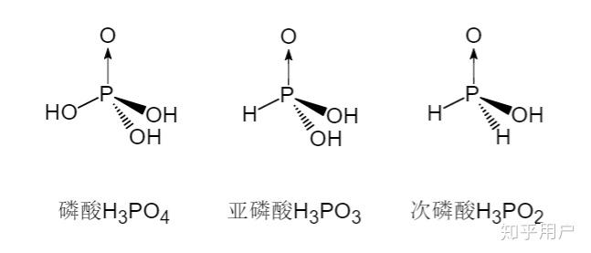
看看，正磷酸、亚磷酸、次磷酸的氢原子都有什么区别？
现在我告诉你，
①正磷酸有酸式盐两种（$NaH_{2}PO_{4}$和$Na_{2}HPO_{4}$），正盐一种（$Na_{3}PO_{4}$）
②亚磷酸有酸式盐一种（$NaH_{2}PO_{3}$），正盐两种（$Na_{2}HPO_{3}$）
③次磷酸无酸式盐，有正盐一种（$NaH_{2}PO_{2}$）
是不是有点规律？你可以想想，正盐的氢原子数和$—H$（直接连接的氢原子）数量有什么关系？
是的，正盐的氢原子数就等于直接连接的氢原子数量，这意味着什么？
我们说过，正盐是酸碱完全中和的产物，不能再被中和。
那么也就是说酸碱中和时中和不了直接连接的氢原子，而是中和了剩下的$—OH$（羟基）中的氢。
想象一下，酸碱中和的过程其实就是氢氧根抢走了羟基氢（羟基中的氢），然后剩下的钠替代原来的位置。
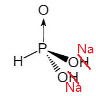
当然，实际上不长图上这样。。
多个氢、多个氢氧根的有了，有没有多个酸根、多个金属离子的呢？
有，复盐是由两种或两种以上简单盐所组成的具有特定性质的化合物。
比如俗称明矾的十二水合硫酸铝钾$KAl(SO_{4})_{2}·12H_{2}O$
2.其他
根据阳离子，我们可以分出铵盐、钠盐等等；
根据酸根离子，我们可以分出硝酸盐、盐酸盐等等。
定量研究的工具（必修专题一）
定量研究时，我们往往需要得心应手的计算工具。于是，为简化天文数字的运算，物质的量作为基本单位应运而生。
物质的量（必修一P9、P38）
参照：【有关物质的量的一些见解】 | Liam’s Boring Life
摩尔，物质的量的单位，简直就是高中化学门口的绊脚石。但它的重要性不言而喻，整个高中的化学计算都将紧密围绕着它展开。为此，这篇文章中，我想从物质的量的定义介绍这个让无数高中生头痛的单位————摩尔。
本人学艺不精，如有疏漏，恳请指出。
接下来，我将用“【】”括住定义的内容，假如你想问这里面的内容从何而来，我只能说因为它就是这么定义的。（为便于理解，定义语言非常不严谨，追求准确的请参阅课本）
1.从C-12开始：相对质量到物质的量
在初中教材中，我们因为原子的质量太太太小了，引入了相对物质质量来描述分子、原子的质量。
可是问题没有完全解决，分子不仅质量很小，数量也多。我们该引入什么样的单位来描述物质的数量呢？
这就是物质的量诞生的原因。
可是问题又来了：我们该用哪种标准来制定呢？
回顾一下相对原子质量是怎么定义的：
【相对原子质量（）是指以一个原子质量的作为标准，任何一个原子的真实质量跟一个质量的的比值，称为该原子的相对原子质量。】
【闲言碎语】
Q1：为什么要用碳-12原子做标准？
因其原子核含有对等的中子和质子数。
Q2：为何中子质子数对等才能作为基准原子呢？
因为中子比质子多一个负电子和一些辐射。
本着能省事就省点事的原则，我们同样用碳-12原子（里面有6个质子+6个中子）来定义物质的量。
我们定义：
【12g的 粒子数为个，这堆粒子就是mol这么多。其中测得（个）】
其中叫做阿伏伽德罗常数，物质的量用表示。
【闲言碎语】
Q3：为什么是12g？
质子和中子质量差不多，把他们看作一种粒子。就有【个C-12里有质子/中子】，所以其实定义的是个质子/中子为1g。
（1g质子/中子有个）
假如上面这段话你不理解，你可以想一下：
【个C-12原子=12g】，给这句话中的C-12原子和12g同除12就有，质子中子每个1g。（等式两边同除很合理吧）
【注意：这里还只是定义了1mol的数量，还没有定义对其他原子该怎么办。】
那么现在我们就可以用mol（摩尔）这个单位描述C-12原子的数量，比如个C-12原子就是mol这么多。
当然啦，怎么会仅限于此，这可叫“物质的量”，我们也可以这样描述组成碳原子的质子和中子：
刚刚说:
【个C-12里有质子/中子】
换句话说就是：
【1mol C-12里有12mol 质子/中子】
那么我就可以说个质子/中子有mol这么多。
我们把刚刚举的俩例子放一起比较比较：
①个C-12原子就是mol这么多。
②个质子/中子有mol这么多。
我们发现，我们描述的物质总数（在上文中对应个和个）
和与摩尔数应该满足一个关系：
这啥意思？就是 mol的物质数量就是乘每摩尔物质的数量（也就是）。
变形一下
这又啥意思？就是说问“个的物质是几摩尔？”，你用除以每摩尔的数量（也就是），就能得出答案了。
欸我有个好点子，既然现在这堆东西都能描述原子的数量了，世间万物都是原子构成，为啥不拿来描述其他的物质的数量呢？
不错，那我们把刚刚的那个公式范围拓展：
比如个氮气原子（里面有有7个中子+7个质子），我们先假设它就是mol，
那可以得出：
“1mol氮原子一共有个，而每个氮原子里又有中子/质子14个，那么中子/质子就有个”
结论是个氮原子里有个中子，很像刚刚我们用C-12推出来的结果，可以验证一下：
结合刚刚定义的【个质子/中子为1g】，那么1mol氮原子的质量就是，
相同数量氮原子和碳原子质量比为7：6，而刚刚计算出1mol 氮原子14g，与定义的1mol C-12为12g相比，也是7：6。
于是照葫芦画瓢，我们定义个粒子，不管是啥，数量都是1mol。
按照上面推公式的思路，依次把“氮原子”替换“物质”，也可以得出式子：
还记得啥意思吗？就是说问“个的物质是几摩尔？”，你用除以每摩尔的数量，也就是，就能得出答案了。
那么接下来我们就可以定义：
【如果物质粒子数为，这堆粒子就是mol这么多。其中测得（个）】
【对于任何一种物质的，用总数除以每摩尔的数量（），就能得出其摩尔数。】
【实战演练】
1.填空题
（1）摩尔是____的单位，1mol的任何物质所含有的粒子数约为____。
（2）1.5mol的中含有____mol ，含有____mol 。
2.计算题
（1）计算下列物质的物质的量
①11g
②56g
③28g
（2）分解氯酸钾制氧气的时候，制0.6mol需要的物质的量是多少？
2.质量也换了吧：用摩尔质量填坑
你有没有发现，刚刚我们计算出1mol氮原子的质量就是，是不是和相对原子质量数值很像？
其实数值上就是一样的，我们待会再证明。既然这个量有用，我们先做个定义：
【1mol 任何物质的质量，称为摩尔质量，用M表示，常用g/mol做单位】
显然这个摩尔质量就是单位物质的量的质量，可以像相对原子质量一样描述粒子的性质。我们举几个例子：
氮原子的摩尔质量为14g/mol，因为1mol 氮原子有14g。
氯化钠的摩尔质量为58.5g/mol，因为1mol 氯化钠分子有58.5g。
为什么数值上和相对原子质量是一样的呢？
因为1mol的某原子，所含质子数+中子数=相对原子质量，
假如一个原子含有M个质子+中子，那么他的相对原子质量也为M，
而个（1mol）的原子有（ mol）个质子+中子。
根据【个（1mol）质子/中子为1g】，质子+中子的总质量就是g= g
于是其摩尔质量就是 g/mol。
观察上面，假如我问12mol的这个某原子质量是多少，该如何计算呢？
我们知道$12N_{A}$个（12mol）的原子有$12MN_{A}$（$12M$ mol）个质子+中子。
质量就是g= g
也就是说12mol的这个某原子质量$m$是$12M$，其中$M$就是摩尔质量。
发现了吗？我们又可以列出一条式子：
其中是物质的量，为摩尔质量，为实际质量。意思就是摩尔质量，作为单位物质的量的质量，乘上物质的量后，就变成实际的质量。
上式可以变为
表示摩尔质量，单位物质的量的质量，等于质量除以物质的量。
这条才是定义式，在定义中我们可以看出来。
【实战演练】
计算题
（1）计算1mol下列物质中含氧元素的质量
①
②
③
（2）与含4g 的溶液完全反应，需用下列物质的物质的量各是多少？
①
②
③
3.气体又不一样：没用的家伙
虽然我们已经有了摩尔质量，但这东西的主要用途还是通过摩尔质量和实际质量的关系，求出摩尔数。接着问题就又来了，液体固体还好称量，气体我称个屁啊。
行！本着怎么方便怎么来的原则，咱们用体积定义一个摩尔体积不得了吗！
于是照葫芦画瓢写出气体摩尔体积的定义：
从【1mol 任何物质的质量，称为摩尔质量，用表示，常用做单位】
到【1mol 任何气体的体积，称为气体摩尔体积，用表示，常用做单位】
接着就是从
到
我们可以照样子说出气体摩尔体积的含义，就是从单位物质的量的质量，变成单位物质的量（气体）的体积。
举几个例子：（在标准情况下，也就是0℃[2]，101kPa下）
1mol的体积是22.4L，那么其
1mol的体积是22.4L，那么其
3mol的体积是67.2L，那么其
欸欸欸打住！谁教你举例子举特例的，怎么全都一样？
这可不怪我，本来就是这样。你看看阿伏伽德罗看到这怎么想的：
阿伏伽德罗发现挺神奇，提出了一个理论，就叫阿伏伽德罗定律，说的是【同温、同压时，同体积的任何气体含有相同数目之分子】。意思就是说，只要温度、气压、体积相同，那么不管你是氧气氮气水蒸气，分子通通一样多。
我们把拉出来分析一下：标准情况下，V相同的情况下n一样，V变大n也变大。
那这么说不随V或n变化而变化，因为V和n其中一个变了另一个肯定变。
啊这。。。
那行吧，我们根据刚刚就知道，在标准情况下，始终等于22.4L/mol。
当然假如不是标准情况他就会变，比如25℃，101kPa下，就变成24.5L/mol了。
那一个不变的常数有什么用吗？
额。。。这还不至于一点用没有，起码它可以在计算时转换单位，并且简化了一些运算。
【实战演练】
计算题
6.5g的锌粒与过量盐酸充分反应，锌粒全部反应，试求：
（1）消耗氯化氢物质的量
（2）生成氢气在标准状况下的体积
什么？你问我答案？
请参考 人民教育出版社.《新编高中化学读本》
(绝对不是懒得打！绝对不是！)
4.别以为这样就算赢了：气体的拓展
理想气体状态方程
刚刚才说了阿伏伽德罗定律：【同温、同压时，同体积的任何气体含有相同数目之分子】，那自然而然我们就会问，假如：保持气压不变，我升温/保持气温不变，我升压，会发生什么？
于是，三个实验定律横空出世——
【学科交叉】
①玻意耳定律：【在等温变化时，一定质量的气体的压强$p$和他的体积$V$的乘积是不变的】，即：实验表明，对于相同质量的同种气体，如果温度不同，恒量的数值也不同。
②查理定律：【在保持气体体积不变的情况下（等容变化），一定质量的气体的压强$p$和气体的热力学温度$T$成正比】，即
实验表明，对于相同质量的同种气体，如果体积不同，恒量的数值也不同。
③盖吕萨克定律：【在等压变化中，一定质量的气体的体积$V$与热力学温度$T$成正比】，即：
实验表明，对于相同质量的同种气体，如果压强不同，恒量的数值也不同。
④阿伏伽德罗定律：【同温、同压时，同体积的任何气体含有相同数目之分子】，那么我们反向思考，不同数目（不同物质的量）的分子应该也会导致温度、体积、压强变化。
讲到这里，你肯定觉得物质的量、压强、温度和体积之间肯定有点什么这样那样的关系了，但是这样显然不好背。
所以我们总结出了理想气体状态方程：
其中
- $p$对应压强
- $V$对应体积
- $T$对应热力学温度
- $n$对应物质的量
- $R$是一个常数，称为普适气体常量，约为$8.31J·K^{-1}·mol^{-1}$
【学科交叉】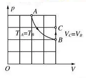
这是怎么从三个定律推出这个方程的呢？我们以右图这个一定质量气体变化过程为例。A点是初状态$(p_{1},V_{1},T_{1})$，经过等温变化到B点中间状态$(p_{中},V_{2},T_{1})$，接下来再经过等容变化到C点末状态$(p_{2},V_{2},T_{2})$
经过这两个变化，一定质量的气体就从$(p_{1},V_{1},T_{1})$变为$(p_{2},V_{2},T_{2})$，压强、温度、体积三个参量全部改变。
从A到B，根据玻意耳定律：
从B到C，根据查理定律：
消去$p_{中}$这个中间量，可得：
这就可以写成
这里的质量是一定的，但是不同质量的气体也需要比较。
但是不同物质的摩尔质量不一样，我们先比较物质的量这个大家都一样的标准。
温度和压强不会因为你分子多而大，这种量叫强度量；体积倒不一样，你分子数越多肯定越大，这种量叫广延量。
那么我们对于任意$n$摩尔的气体，体积比单位体积大$n$倍，温度和压强不变，所以上面的恒量也是$n$倍。
也就是这总会化成上面形式了吧！
同时上面的形式就可以写为：这就是任意质量的理想气体状态方程。
【闲言碎语】你会背了吗？
牛头人公式
道尔顿分压定律
刚刚都说单种气体，那么混合气体怎么办？
道尔顿说，对于混合理想气体，其状态方程仍然可以表达为下式：
但是压强为
那也就是说，混合气体系统的压强等于各组分气体压强之和。
定律的实际应用
当然，高中化学不会让你利用这些来计算的，他们大多在定性分析的时候派上用场。
 A.所含原子数相等
A.所含原子数相等B.密度相等
C.质量相等
D.摩尔质量相等
答案选A哟！想想为什么？
我们搬出这个：
可见两瓶中压强、温度、体积都一样，那么物质的量一样，原子数都为$2N_{A}$
因为总的物质的量一样，所以有
只要满足该式就是上图情况。
显然只有当$n(N_{2}):n(O_{2})=1:1$时满足摩尔质量相等，所以D不一定成立。
BC同理。
十字交叉法
计算混合气体组份含量时，我们可以用列方程或十字交叉法。
A.29:8:13
B.22:1:14
C.13:8:13
D.21:10:12
答案就是D！
密度、体积相同质量肯定一样，
先算出摩尔质量：$64-SO_{2}$ ， $2-H_{2}$ ， $44-CO_{2}$ ， $44-N_{2}O$
看的出来，二氧化碳不论占多大比也只能无限向44靠近，要想让整体等于44得让二氧化硫和氢气摩尔质量等于44。
①列方程计算
设二氧化硫物质的量为a，氢气为b，一氧化二氮的就为(a+b)
具体怎么解你总会了吧，解得a:b=21:10
②十字交叉法
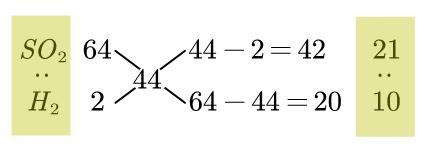
将摩尔质量写在上下，平均摩尔质量写在中间，交叉相减，得到的上下比例即为物质的量之比。
5.混合物也要定量：物质量的浓度
物质的量的浓度（P38）
暂无
水溶液中的变化（上）（必修专题一）
电离方程式（必修一P20、P74）
前面已经提到了电离，现在就来详细讲讲。
1.电解质
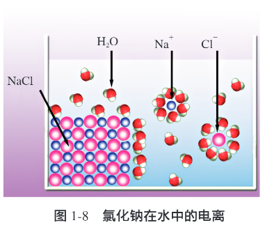
一些物质溶于水后，会形成如图的水合离子，从而可以自由移动；一些物质加热至熔融状态，也会产生可以自由移动的离子。
【闲言碎语】你注意到上图中钠离子和氯离子周围的水分子朝向有什么不同吗？
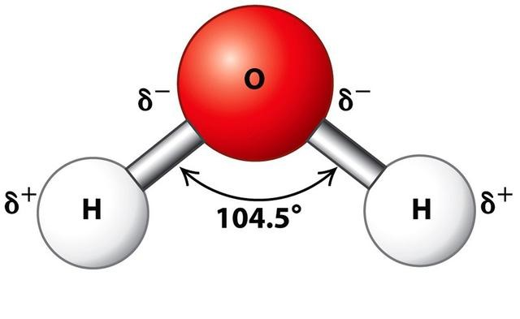
因为水分子有极性，所以电荷会偏向聚集在一边。
你看$\delta^{+}$端是不是朝向$Cl^{-}$？$\delta^{-}$端是不是朝向$Na^{+}$？神奇吧~
我们把在这样在水溶液或熔融状态下能导电的化合物叫作电解质。电解质在水溶液中或熔融状态下产生自由移动的离子的过程称为电离。
反之，无论是在水溶液中或熔融状态下均以分子形式存在、不能导电的化合物叫作非电解质。
注意一个字眼：“化合物”，非电解质和电解质都是化合物的分类！
那么就会有既不是电解质、也不是非电解质、还可以导电的物质——铜单质。（当然你说铁啊啥的也没问题）
同时，导电的必须是物质本身，二氧化碳溶于水形成碳酸再导电就不算了。
电解质有哪些？非电解质有哪些？
电解质
①酸、碱、盐
②活泼金属氧化物
$Na_{2}O$、$MgO$、$CaO$
③活泼金属氢化物
$NaH$、$CaH_{2}$
③部分非金属氧化物
$H_{2}O$
④部分有机物
$CH_{3}COOH$
非电解质
①大部分非金属氧化物
$CO$、$CO_{2}$、$SO_{3}$
②部分非金属氢化物
$NH_{3}$、$PH_{3}$、$CH_{4}$
③大多数有机物
2.强弱电解质
电解的时候有的分子全部转化为水合离子，称为完全电离。有的只有部分转化为水合离子，称作不完全电离。
在水溶液中（几乎）完全发生电离的电解质，称作强电解质。在水溶液中不完全（少部分）电离的电解质，称作弱电解质。
电解质的强弱和溶解度、导电能力没有直接联系。
例如$CaCO_{3}$，尽管它溶解度特别小，小到几乎不溶解，但是它溶解的一小部分完全电离，所以它是强电解质。既然碳酸钙在溶液中只有少量溶解，自由移动的离子少，导电性就肯定较差了。
看看强弱电解质都有哪些？
强电解质
①强酸、强碱
$HCl$、$HNO_{3}$、$H_{2}SO_{4}$
$KOH$、$NaOH$、$Ca(OH)_{2}$、$Ba(OH)_{2}$
②绝大部分盐
弱电解质
①弱酸、弱碱
$CH_{3}COOH$、$H_{3}PO_{4}$、$H_{2}CO_{3}$
$NH_{3}·H_{2}O$、$Fe(OH)_{3}$
②水
③极个别盐
$(CH_{3}COO)_{2}Pb$、$HgCl_{2}$
3.电离方程式
总不能每次都要画个图表示电离吧，我们用化学符号来表示电离过程，这样的的式子就叫电离方程式。
为了方便，水合离子我们就用中间的离子表示就好，比如上面的水合氯离子就写作$Cl^{-}$
强电解质的电离方程式
强电解质全部电离，方程式用等号。
需要注意的是：
①原子团不要拆
②电子要守恒，正负的离子要配平。
弱电解质的电离方程式
弱电解质因为没法全部电离，需要用可逆符号。
啥是可逆符号？就是表示反应进行不完全，你正反应的同时逆反应也进行，互相打架最后达到一个平衡。
【闲言碎语】实际上，多元弱酸的第二级电离比第一级电离要微弱的多，第一级是最强的。这点后面有用。
①弱酸要分步电离
②弱碱不用分步电离
酸式盐的电离方程式
有点特殊，建议熟记。
水溶液：
熔融：
【闲言碎语】因为在水溶液中弱酸第二级电离较难，所以不拆$HCO_{3}^{-}$。但是水溶液中硫酸是强酸，全部电离，故全部拆完。
而熔融状态中只有离子之间的连接（其实叫离子键）能断开，所以不拆。
4.离子方程式
离子方程式（必修一P75）
暂无
氧化还原的反应（必修专题一）
氧化还原反应（必修一P7、P63、P100）
暂无
实验仪器的操作（必修专题二）
化学是一门以实验为基础的科学，所以我们要学会做实验。（还是屁话）
1.分离提纯
分离提纯（必修一P28）
做完了实验很多时候物质都混在一起，丢了多可惜啊。为了省钱我们就要学会分离提纯接着用！
1.1过滤
先是固液分离，就是我们中考已经在工业流程填过的过滤。
想必初中已经讲的很透彻了，我们在这里就简单复习就好。
原理
利用物质的溶解性差异，将液体和不溶于液体的固体分离开来。
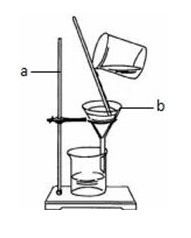
步骤
①一贴
- 滤纸紧贴漏斗壁
②二低
- 漏斗内液面低于滤纸边缘
- 滤纸边缘低于漏斗壁
③三靠
- 小烧杯紧靠玻璃棒
- 玻璃棒下端靠在滤纸上
- 漏斗下口靠在烧杯壁上
1.2蒸发结晶
接下来是溶液中的固液分离——蒸发结晶。
蒸发结晶适用于提纯溶解度随温度变化较小的物质。
原理
利用加热的方法，使溶液中溶剂不断挥发而析出溶质（晶体）。
步骤
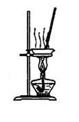
操作要领：
（1）液体不超过其容积的2/3。
（2）蒸发过程中必须用玻璃棒不断搅拌，防止局部温度过高而使液体飞溅。
（3）当出现大量固体时，应停止加热用余热蒸干。
（4）不能把热的蒸发皿直接放在实验台上，应垫上陶土网。
1.3实践应用
（必修一P30）实验室用$KClO_{3}$在$MnO_{2}$的催化下受热分解制取氧气。从反应后的$KCl$和$MnO_{2}$的混合物中分离、回收这两种物质，应采取什么方案？
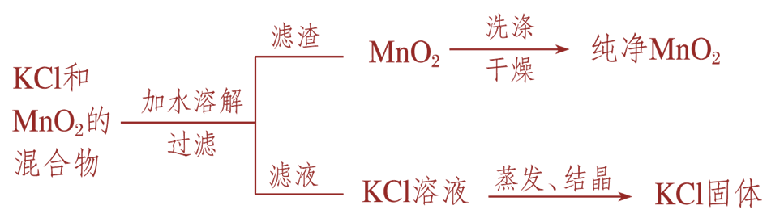
实验方案：
（1）将混合物加适量水，搅拌，使$KCl$充分溶解。
（2）过滤，洗涤，干燥，得到$MnO_{2}$。
（3）将滤液蒸发结晶，得到$KCl$。
1.4蒸发浓缩、冷却结晶
接下来我们来进行溶液中的固固分离，利用蒸发浓缩、冷却结晶的方法。
原理
根据物质在不同温度下溶解度不同而分离或提纯固体物质。
步骤
实验方案：
①将混合物放入烧杯中，加入较高温度的水，搅拌，使固体刚好溶解；
②将所得溶液冷却，直到有大量晶体析出。
③过滤、洗涤、干燥。
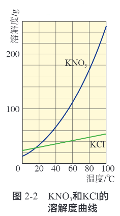
1.5蒸馏
接下来是沸点相差大的液液分离——蒸馏。
原理
将液态物质加热至沸点，使之汽化，然后将蒸气重新冷凝为液体。
利用的是各组分之间沸点相差较大来分离的。
仪器
我们先认识一下仪器。
左图中烧水的是蒸馏烧瓶，右图中则是圆底烧瓶。里面装有防止暴沸的碎瓷片/沸石。
温度计不是必需的，假如只需要提纯一种组分，则不需要温度计；假如需要提纯多种组分，则要严格控制温度。若有，温度计的水银球要位于蒸馏烧瓶支管口下沿同一水平线上。
中间的管叫冷凝管，冷水在冷凝管外层流过使气体凝结成水珠。冷水要从下进上出，这样冷凝水与管内热水或热气的温差比较小，不会因膨胀不均破裂甚至爆炸；同时冷却效果也更好。
最后连接锥形瓶的仪器名称很多，尾接管、牛角管等等都是它。
步骤
操作要点：
1.先通冷却水，再加热。
2.刚开始收集到的馏分应弃去。(包含低沸点杂质)
3.全程严格控制好温度。
1.6萃取、分液
最后是互不相溶的液液分离——萃取、分液。
原理
利用物质在互不相溶的溶剂中的溶解度的不同，将物质从一种溶剂中转移到另外一种溶剂（萃取剂）中，从而实现分离。
步骤

操作要点：
1.分液漏斗使用前要检漏。
2.充分振荡，适当放气，充分静止，然后分液；
3.分液时保持漏斗内与大气压一致；下层溶液下口出，上层溶液上口出。
常用的萃取剂：四氯化碳$CCl_{4}$、三氯甲烷$CHCl_{3}$、苯、汽油。
萃取的条件：
（1）两种溶剂互不相溶；
（2）溶质与溶剂，溶剂与溶剂互不反应；
（3）溶质在两种溶剂中的溶解度相差较大。
1.7实践应用
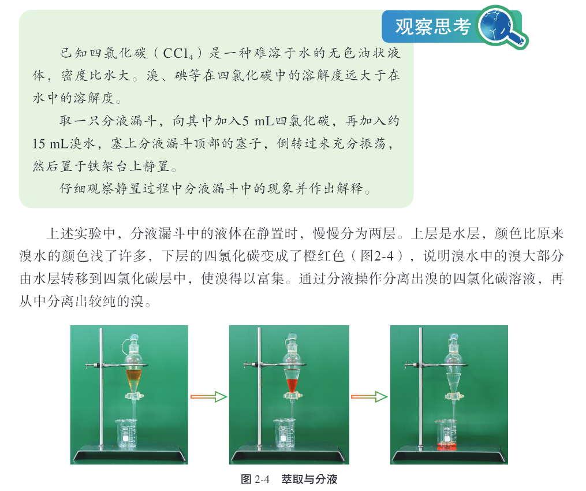
实验现象：液体分为两层，上层颜色比原来溴水的颜色浅，下层变为橙红色。
2.物质的检验
暂无
3.配置溶液
暂无